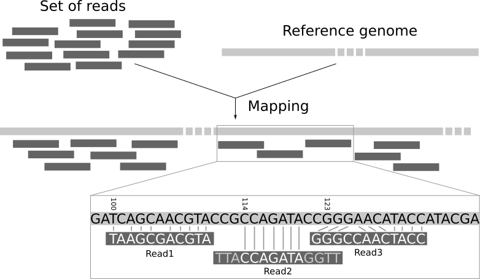
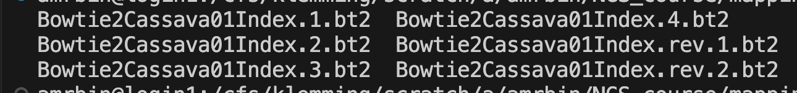
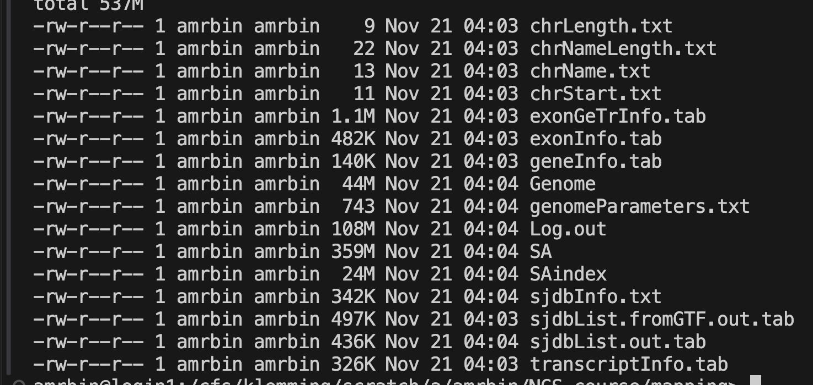

Mapping sequencing reads
Introduction to NGS Mapping
Now that you have looked at the quality of the samples, we will go to the next step of a typical analysis: mapping the reads to a reference genome. Once we know where our reads map we can continue to annotate our reads. You will annotate a genome in a different module of this course.
Learning objectives
- map NGS sequences to a reference
- use different tools for different types of data
- train the command line more and more independently
- navigate absolute and relative paths when using the command line
- structure your project directories to be well organized
Preparations
Connect to HPC2N
For this tutorial we will connect to the course server.
To connect to the server, please follow the instructions here.
Quick access link to the on-demand service of HPC2N:
Start a screen session
Screen or GNU Screen is a terminal multiplexer. In other words, it means that you can start a screen session and then open any number of windows (virtual terminals) inside that session. Processes running in Screen will continue to run when their window is not visible even if you get disconnected.
Start a named session
screen -S mappingYou can detach from the screen session. The process within the screen will continue to run.
Ctrl + a dYou can always reattach to the session. If you have a number of screen running, or are unsure of the name or ID of the screen you want to reattach to you can list the currently running screens:
screen -lsTo resume your screen session use the following command:
screen -r nameCan you find the screen session that you started on the first NGS day?
Read mapping
When studying an organism with a reference genome, it is possible to infer which transcripts are expressed by mapping the reads to the reference genome (genome mapping) or transcriptome (transcriptome mapping). Mapping reads to the genome requires no knowledge of the set of transcribed regions or the way in which exons are spliced together. This approach allows the discovery of new, unannotated transcripts. 1
Read mapping is the process to align the reads on a reference genome. A mapper takes as input a reference genome and a set of reads. Its aim is to align each read in the set of reads on the reference genome, allowing mismatches, indels and clipping of some short fragments on the two ends of the reads.
Below is an illustration of the mapping process. The input consists of a set of reads and a reference genome. In the middle, it gives the results of mapping: the locations of the reads on the reference genome. The first read is aligned at position 100 and the alignment has two mismatches. The second read is aligned at position 114. It is a local alignment with clippings on the left and right. The third read is aligned at position 123. It consists of a 2-base insertion and a 1-base deletion 2.

Data
In this tutorial we will map data of two experiments against a reference sequence.
The first data set is a paired end DNA sequence of a cassava genotype called TMEB117 and the second data set is a paired end RNA sequencing from a cassava genotype called TMEB419. You have worked with these samples in the last exercise.
And again a special shoutout to Andreas Gisel for providing these samples!
The reference sequence is chromosome01 from the latest cassava genome built V8.
Create a directory to work in
Start by creating a workspace for this exercise in your folder in the course directory, and then move into it:
mkdir -p NGS_course/mapping/ref
cd NGS_course/mapping/refSymbolic links to data
To save time and computation power we will use only chromosome01 for the exercise.
The reference data files are located in the course directory, in teachers/course_data/NGS/ (see The NGS data). Save the path in a variable again (replace <course directory> with the path from Canvas):
DATA=<course directory>/teachers/course_data/NGSCreate symbolic links to the reference files in your workspace:
ln -s $DATA/chromosome01.fasta .
ln -s $DATA/Mesculenta_671_v8.1.gene_exons.gff3 .
ln -s $DATA/Mesculenta_671_v8.1.gene_exons.gtf .Do you remember why we decided to link to the files instead of copying them?
Check that you can now see the linked files in the directory and move back into the directory “mapping”.
ls
cd ..Mapping DNA sequences
Bowtie 2
Now we are all set to map our paired end DNA sequences onto the reference.
Bowtie2 is an ultrafast and memory-efficient tool for aligning sequencing reads to long reference sequences. It is particularly good at aligning reads of about 50 up to 100s or 1,000s of characters, and particularly good at aligning to relatively long (e.g. mammalian) genomes. Bowtie 2 indexes the genome with an FM Index to keep its memory footprint small: for the human genome, its memory footprint is typically around 3.2 GB. Bowtie 2 supports gapped, local, and paired-end alignment modes.
Apptainer image
Go to seqera containers, and get the container image path for bioconda::bowtie2. Remember to get the singularity container, not the one for docker.
Pull the image into the singularity_images directory.
apptainer pull --name bowtie2_2.5.5.sif oras://community.wave.seqera.io/library/bowtie2:2.5.5--8fdad5cac15e31bcCreate index
Each NGS mapper uses indices to accelerate the mapping process, but unfortunately each one has his own way to create these indices. Therefore we first need to create the index for bowtie2 of our reference sequence, which we will call Bowtie2Cassava01Index and will be located in the reference directory.
Create a bash file within the scripts directory:
touch bowtie_index.shAnd copy the following into the file:
#! /bin/bash -l
#SBATCH -A <course project ID>
#SBATCH -t 05:00
#SBATCH -n 1
set -ueo pipefail
# Define input reference and output directory
REFERENCE=mapping/ref/chromosome01.fasta
OUTPUT_DIR=mapping/ref/
apptainer exec singularity_images/bowtie2_2.5.5.sif \
bowtie2-build -o 3 $REFERENCE $OUTPUT_DIR/Bowtie2Cassava01Index
echo "complete"Save the above code and run the script using
sbatch scripts/bowtie_index.shFrom where are you calling this script?
You will get the following index files:

Map with bowtie2
Now that we have the index we create a directory for the bowtie2 results:
mkdir mapping/bowtie2and then we can run the mapping:
Make a file in the scripts folder bowtie2_mapping.sh.
#! /bin/bash -l
#SBATCH -A <course project ID>
#SBATCH -t 15:00
#SBATCH -n 4
set -ueo pipefail
# Get CPUS allocated to slurm script (-n above)
CPUS=$SLURM_NPROCS
INDEX=mapping/ref/Bowtie2Cassava01Index
R1=raw/TMEB117_R1_frac.fastq
R2=raw/TMEB117_R2_frac.fastq
# trimmed data
# R1=fastp/TMEB117_fastp-trimmed_R1.fastq
# R2=fastp/TMEB117_fastp-trimmed_R2.fastq
apptainer exec singularity_images/bowtie2_2.5.5.sif \
bowtie2 --very-sensitive-local \
--threads $CPUS \
-x $INDEX \
-S mapping/bowtie2/TMEB117.sam \
-1 $R1 \
-2 $R2 |& tee mapping/bowtie2/TMEB117.log
echo "complete"Save the script in the scripts directory and run the code.
You can check running jobs with
squeue -u <your_user_name>We will get a mapping file in the SAM format and the log file with the mapping statistics.
mapping/bowtie2/TMEB117.sam
mapping/bowtie2/TMEB117.log
Check the log: how many read pairs mapped concordantly to exactly one place in the reference? What does “concordantly” mean, and why might a pair map to more than one place?
Check the SAM file and check how many hits we have - use samtools to do so.
Get the appropriate container and use it from within with apptainer shell. Look into the samtools manual to figure out how to look at the file.
Now you can play around a bit. You could see what influence the trimming might have on the mapping of these data. For that re-run the mapping with the trimmed data. Make sure you point towards the correct file paths!
Check the log and SAM file and see what difference we have.
Time allowing, I propose to run a third test mapping either using the raw data of trimmed data by changing the mapping mode from local to end-to-end or from very-sensitive to fast, loosing some accuracy but reducing the mapping time.
Replace in the commands above –very-sensitive-local to –very-sensitive or from –very-sensitive-local to –fast-local.
Again, compare the output with the previous ones.
Mapping RNA seq data
The data set TMEB117 is DNA sequencing data and bowtie2 the right tool for mapping and data analysis.
TMEB419 however is RNA sequencing data. While we could map the data with bowtie2 (try it out if you want to), there are aligners that are dedicated for RNA sequencing data. These find splicing sites within the reads and guarantee an accurate reconstruction of the sequenced transcripts.
STAR
STAR is one such splicing site sensitive mapper for RNA sequencing data.
Apptainer image
Go to seqera containers, and get the container image path for bioconda::star.
Pull the image into the same directory as the other container images.
Which one was that again?
apptainer pull --name star_2.7.11b.sif oras://community.wave.seqera.io/library/star:2.7.11b--d61915af03bd3432Prepare index
The data we will use for this part of the tutorial is paired end RNA sequencing data and is already in your /raw directory (TMEB419RNA_frag_R1.fastq, TMEB419RNA_frag_R2.fastq).
First, we need to generate the STAR index, and this time we will include gene annotations to enable the mapped reads to be associated with known genes and transcripts.
Next we have to create the directory where we will store the STAR index for chromosome 1. Let’s use the /refdirectory for that:
mkdir mapping/ref/STARCassava01IndexThe indexing script for STAR will be the following:
Do you remember all the steps you need to do to run the script?
Save the below in the scripts directory:
touch scripts/star_index.shand run it from the mapping directory with
sbatch scripts/star_index.sh#! /bin/bash -l
#SBATCH -A <course project ID>
#SBATCH -t 05:00
#SBATCH -n 1
set -ueo pipefail
INDEX=mapping/ref/STARCassava01Index
REFERENCE=mapping/ref/chromosome01.fasta
GTF=mapping/ref/Mesculenta_671_v8.1.gene_exons.gtf
apptainer exec singularity_images/star_2.7.11b.sif \
STAR --runMode genomeGenerate \
--genomeDir $INDEX \
--genomeFastaFiles $REFERENCE \
--sjdbGTFfile $GTF \
--genomeSAindexNbases 11 \
--genomeChrBinNbits 16 \
--outTmpDir mapping/star_tmpWith this you will end up with a bunch of index files:

Files like geneInfo.tab, exonGeTrInfo.tab, transcriptInfo.tab, exonInfo.tab, sjdbList.fromGTF.out.tab, sjdbList.out.tab, sjdbInfo.txt contain the indexing information of the predicted genes, transcripts, exons and splicing sites annotated in the Mesculenta_671_v8.1.gene_exons.gtf file. Have a look around!
Have a look around the files to see what you discover!
Map with STAR
Now we are ready to map the RNA sequences to the reference sequence.
Make a directory for the output:
mkdir mapping/starAnd then save the following script and run it with sbatch (like above).
#! /bin/bash -l
#SBATCH -A <course project ID>
#SBATCH -t 15:00
#SBATCH -n 4
set -ueo pipefail
# Get CPUS allocated to slurm script (-n above)
CPUS=$SLURM_NPROCS
INDEX=mapping/ref/STARCassava01Index
READ1=raw/TMEB419RNA_frag_R1.fastq
READ2=raw/TMEB419RNA_frag_R2.fastq
apptainer exec singularity_images/star_2.7.11b.sif \
STAR --genomeDir $INDEX \
--runThreadN $CPUS \
--outFilterMismatchNoverLmax 0.06 \
--outFilterMatchNminOverLread 0.5 \
--outFilterScoreMinOverLread 0.2 \
--alignIntronMax 20000 \
--alignMatesGapMax 10000 \
--outFileNamePrefix mapping/star/TMEB419RNA_ \
--readFilesIn $READ1 $READ2
echo "complete"Run with sbatch.
Your output will be the SAM file, report files and the list of predicted splicing sites.
Inspect the report file and check the mapped reads and the average mapped length.
Is this a good mapping?
Next steps
After quality control and mapping, a typical next step when working with NGS data would be to annotate the reads, so you get an idea of what you are looking at. You will do that later in this course.
Look back at the NGS_course directory. What do you think, did you manage to keep the chaos at bay? What went well in keeping order and what could be improved? Discuss with your neighbour.
For now, please do not forget to take the lab quiz for today in Canvas. Then you are done for the day. (o:
Footnotes
https://www.ebi.ac.uk/training/online/courses/functional-genomics-ii-common-technologies-and-data-analysis-methods/rna-sequencing/performing-a-rna-seq-experiment/data-analysis/read-mapping-or-alignment/↩︎
https://training.galaxyproject.org/training-material/topics/sequence-analysis/tutorials/mapping/tutorial.html↩︎